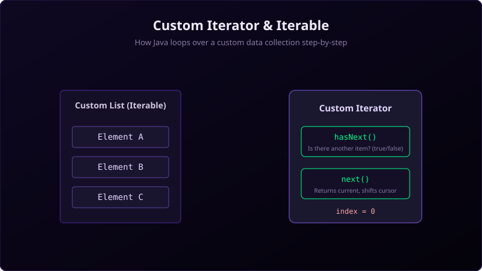

In Java programming, the enhanced for-each loop (for (Type item : collection)) is the standard syntax for traversing arrays and collection classes. Behind this syntax sugar lies a strict interface contract. Any class that you want to loop over using the for-each loop must implement the Iterable interface.
When a class implements Iterable, it promises to supply a helper object known as an Iterator, which handles the actual mechanics of tracking indices and retrieving elements. By custom-implementing these two interfaces, you can expose your own custom data structures—such as binary trees, linked lists, database result sets, or custom matrices—to Java's standard looping tools. In this guide, we will break down the design pattern of Iterator and Iterable and build a custom iterable class in Java.

To visualize this design pattern, imagine you are hosting a poker night.
- The
IterableContainer (The Card Deck): The card deck is simply a physical container that holds the cards. The deck itself is static; it does not know the rules of dealing, how many players are at the table, or which card is currently at the top of the pile. - The
IteratorHelper (The Dealing Shoe): To start playing, you place the deck inside a mechanical card dealing shoe. When you interact with this dealing shoe, you ask it two questions:hasNext(): The machine checks if there is at least one card remaining inside the dispenser slot.next(): The machine slides the top card out to you and slides the next card into place, moving its internal mechanical cursor forward by one.
Iterable because it can be dealt, and the mechanical shoe is the Iterator because it does the work of dealing.
The Java Contract
To make your own class iterable, you must follow a two-part contract:
- Implement
Iterable<T>: Your container class implementsIterable<T>. This requires overriding theiterator()method to return a fresh instance of your iterator class. - Implement
Iterator<T>: You define a class (often an inner class) that implementsIterator<T>. This requires overriding two main methods:boolean hasNext(): Returnstrueif there are more elements to traverse.T next(): Returns the next element in the iteration and advances the cursor. If no elements remain, it should throw aNoSuchElementException.
Step-by-Step Execution Tracing
Let's trace how the JVM executes the for-each loop:
- First, the compiler translates the loop into an explicit iterator retrieval:
Iterator<String> it = collection.iterator();. - Next, it runs a
whileloop using the iterator's state:while(it.hasNext()) { String item = it.next(); System.out.println(item); }. - Because our
CustomIteratorinner class has direct access to the outer class'selementsarray, it reads the elements sequentially using its privatecursorpointer, incrementing it withcursor++on every call tonext().
Java Implementation Code
Below is a complete Java implementation showcasing a custom collection class that implements Iterable, allowing it to be traversed directly using a standard for-each loop:
package io.practise.myPractice;
import java.util.Iterator;
public class IterableInterfaceImplementation implements Iterable<String> {
private String[] elements = {"Apple", "Banana", "Cherry"};
@Override
public Iterator<String> iterator() {
return new CustomIterator();
}
private class CustomIterator implements Iterator<String> {
private int cursor = 0;
@Override
public boolean hasNext() {
return cursor < elements.length;
}
@Override
public String next() {
if (!hasNext()) {
throw new java.util.NoSuchElementException();
}
return elements[cursor++];
}
}
public static void main(String[] args) {
IterableInterfaceImplementation collection = new IterableInterfaceImplementation();
for (String item : collection) {
System.out.println(item);
}
}
}Conclusion & Design Benefits
Custom iterators are a powerful way to encapsulate the internal representation of your data structures. By implementing Iterable, you allow client code to loop over complex graphs, custom trees, or paginated API results using clean, idiomatic Java loops. This hides traversal complexity, keeps your API clean, and maintains standard collections integration.